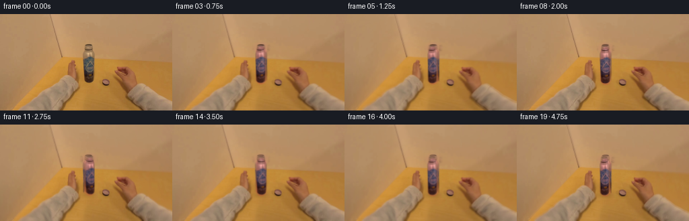
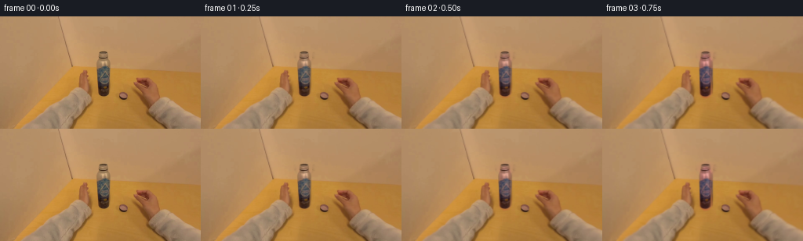
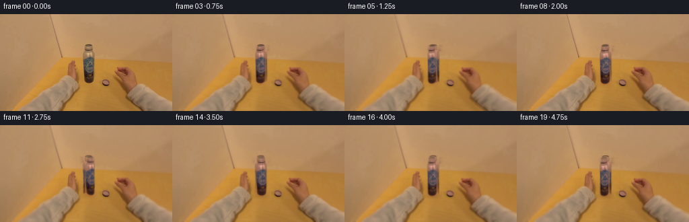
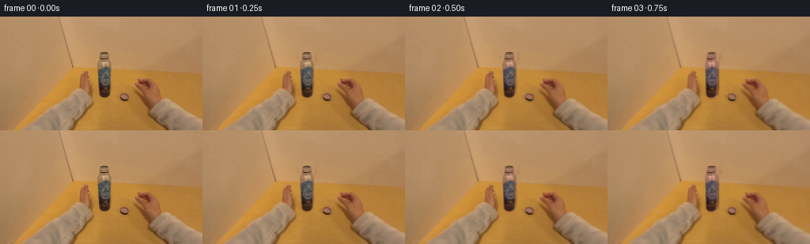
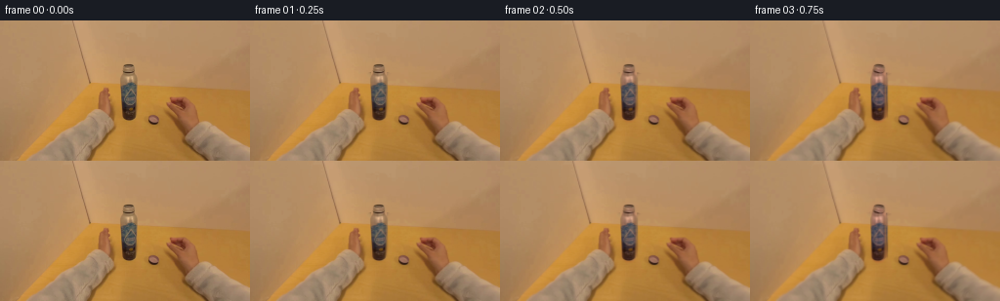
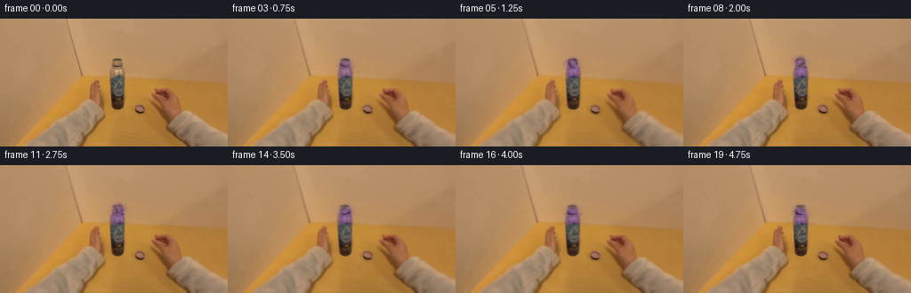
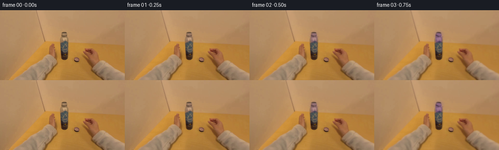

CODING AGENTS AS PIXEL WORLD MODELS
traex/DeepSeek-V4.1-Flash · common50_0014
点击播放 · 原生 RGB 像素
逐轮保存的候选
回放视频、检查图与代码变化。
每份候选均可单独播放。实际图片检查记录在下方工具轨迹中。
候选 01播放与检查图
点击播放 · 原生 RGB 像素


展开代码变化
--- 上一保存版本
+++ 本次保存版本
@@ -0,0 +1,225 @@
+from pathlib import Path
+
+import numpy as np
+from PIL import Image
+from scipy.ndimage import gaussian_filter, map_coordinates
+
+import artifact_io
+
+
+ROOT = Path(__file__).resolve().parent
+WIDTH, HEIGHT = 256, 144
+FRAME_COUNT = 20
+FPS = 4
+
+
+def smoothstep(value):
+ value = np.clip(value, 0.0, 1.0)
+ return value * value * (3.0 - 2.0 * value)
+
+
+def sample_rgb(image, xs, ys):
+ coordinates = np.stack([ys, xs])
+ result = np.empty((*xs.shape, 3), dtype=np.float32)
+ for channel in range(3):
+ result[..., channel] = map_coordinates(
+ image[..., channel].astype(np.float32),
+ coordinates,
+ order=1,
+ mode="nearest",
+ prefilter=False,
+ )
+ return result
+
+
+def sample_mask(mask, xs, ys):
+ return map_coordinates(
+ mask.astype(np.float32),
+ np.stack([ys, xs]),
+ order=1,
+ mode="constant",
+ cval=0.0,
+ prefilter=False,
+ )
+
+
+def ellipse_mask(xx, yy, cx, cy, rx, ry, feather):
+ distance = np.sqrt(((xx - cx) / rx) ** 2 + ((yy - cy) / ry) ** 2)
+ return np.clip((1.0 + feather - distance) / (2.0 * feather), 0.0, 1.0)
+
+
+def capsule_mask(xx, yy, cx, y0, y1, radius, feather):
+ nearest_y = np.clip(yy, y0, y1)
+ distance = np.sqrt((xx - cx) ** 2 + (yy - nearest_y) ** 2)
+ return np.clip((radius + feather - distance) / (2.0 * feather), 0.0, 1.0)
+
+
+def make_cap_mask():
+ yy, xx = np.mgrid[:HEIGHT, :WIDTH].astype(np.float32)
+ top = ellipse_mask(xx, yy, 131.7, 49.2, 6.8, 5.4, 1.15)
+ body = capsule_mask(xx, yy, 131.7, 55.5, 96.8, 8.0, 1.25)
+ return np.clip(np.maximum(top, body), 0.0, 1.0)
+
+
+def make_background_plate(image):
+ plate = image.copy()
+ x_start, x_end = 120, 145
+ for y in range(40, 106):
+ left = np.median(image[y, 113:122], axis=0)
+ right = np.median(image[y, 143:152], axis=0)
+ for x in range(x_start, x_end + 1):
+ weight = (x - x_start) / float(x_end - x_start)
+ color = (1.0 - weight) * left + weight * right
+ texture = 0.9 * np.sin(0.38 * x + 0.77 * y)
+ plate[y, x] = np.clip(color + texture, 0.0, 255.0)
+ return plate
+
+
+def twist_cap(image, background, cap_mask, progress):
+ ease = smoothstep((progress - 0.035) / 0.92)
+ theta = 2.0 * np.pi * 1.12 * ease
+ drop = 2.6 * ease
+
+ yy, xx = np.mgrid[38:108, 116:149].astype(np.float32)
+ local_u = xx - 131.7
+ texture_shift = 2.35 * np.sin(theta) + 0.55 * np.sin(2.0 * theta + 0.4)
+ wrap_width = 16.2
+ wrapped_x = 131.7 + (
+ (local_u + texture_shift + 0.5 * wrap_width) % wrap_width
+ ) - 0.5 * wrap_width
+
+ y_source = yy - drop - 0.16 * np.sin(theta + 0.035 * local_u)
+ x_source = wrapped_x + 0.12 * np.sin(2.0 * theta + 0.20 * yy)
+
+ sampled = sample_rgb(image, x_source, y_source)
+ source_mask = sample_mask(cap_mask, x_source, y_source)
+ target_mask = sample_mask(cap_mask, xx, yy - drop)
+
+ core = (
+ np.clip((6.2 - np.abs(local_u)) / 2.2, 0.0, 1.0)
+ * np.clip((101.0 - yy) / 3.0, 0.0, 1.0)
+ * np.clip((yy - 51.0) / 3.0, 0.0, 1.0)
+ )
+ ribs = 0.5 + 0.5 * np.cos(
+ 2.0 * np.pi * local_u / 3.25 - 2.15 * theta
+ )
+ rib_light = 1.0 + 0.052 * core * (ribs - 0.5)
+
+ tint_strength = 0.54 * smoothstep(progress / 0.17)
+ purple_gain = np.array([1.10, 0.74, 1.21], dtype=np.float32)
+ purple_mix = (1.0 - tint_strength) + tint_strength * purple_gain
+ cap_rgb = sampled * purple_mix * rib_light[..., None]
+
+ highlight_position = 3.2 * np.sin(theta + 0.35)
+ highlight = np.exp(
+ -0.5 * ((local_u - highlight_position) / 1.55) ** 2
+ )
+ highlight *= np.clip((98.0 - yy) / 48.0, 0.0, 1.0) * core
+ cap_rgb += (22.0 + 7.0 * np.sin(theta)) * highlight[..., None]
+
+ alpha = np.clip(target_mask * (0.25 + 0.75 * source_mask), 0.0, 1.0)
+ alpha = gaussian_filter(alpha, 0.30)
+
+ hole = np.clip(cap_mask[38:108, 116:149] - target_mask, 0.0, 1.0)
+ hole = gaussian_filter(hole, 0.55)
+ canvas = image[38:108, 116:149] * (1.0 - hole[..., None])
+ canvas += background[38:108, 116:149] * hole[..., None]
+ composited = canvas * (1.0 - alpha[..., None]) + cap_rgb * alpha[..., None]
+
+ result = image.copy()
+ result[38:108, 116:149] = composited
+
+ full_yy, full_xx = np.mgrid[:HEIGHT, :WIDTH].astype(np.float32)
+ shadow_center_y = 101.8 + drop
+ contact = np.exp(
+ -0.5 * ((full_xx - 131.7) / 8.7) ** 2
+ -0.5 * ((full_yy - shadow_center_y) / 3.2) ** 2
+ )
+ contact *= 0.12 * ease
+ result *= (1.0 - contact[..., None])
+
+ return np.clip(result, 0.0, 255.0), ease, theta, drop
+
+
+def twist_grip(image, cap_mask, progress, ease, theta):
+ yy, xx = np.mgrid[:HEIGHT, :WIDTH].astype(np.float32)
+ right = ellipse_mask(xx, yy, 199.0, 113.0, 57.0, 40.0, 15.0)
+ lower = ellipse_mask(xx, yy, 128.0, 143.0, 83.0, 28.0, 15.0)
+ left = ellipse_mask(xx, yy, 91.0, 126.0, 39.0, 27.0, 13.0)
+ grip = np.clip(np.maximum(right, np.maximum(0.82 * lower, 0.74 * left)), 0.0, 1.0)
+ grip *= 1.0 - 0.92 * gaussian_filter(cap_mask, 1.4)
+
+ press = smoothstep(progress / 0.18) * (1.0 - smoothstep((progress - 0.86) / 0.14))
+ twist_angle = 0.020 * np.sin(theta) + 0.006 * np.sin(2.0 * theta)
+ dx = -twist_angle * (yy - 82.0)
+ dy = twist_angle * (xx - 131.7)
+ dx -= 0.65 * press * np.clip((xx - 142.0) / 30.0, 0.0, 1.0)
+ dy += 0.30 * np.sin(2.0 * np.pi * ease + 0.035 * yy) * grip
+
+ warped = sample_rgb(image, xx - dx, yy - dy)
+ blend = (0.92 * grip)[..., None]
+ return np.clip(image * (1.0 - blend) + warped * blend, 0.0, 255.0)
+
+
+def handheld_motion(image, progress):
+ if progress <= 0.0:
+ return image
+ yy, xx = np.mgrid[:HEIGHT, :WIDTH].astype(np.float32)
+ phase = 2.0 * np.pi * progress
+ dx = 0.22 * np.sin(phase) + 0.07 * np.sin(2.0 * phase + 0.3)
+ dy = 0.13 * np.sin(phase + 0.45) - 0.13 * np.sin(0.45)
+ zoom = 1.0 + 0.0012 * (0.5 - 0.5 * np.cos(phase))
+ xs = (xx - 128.0) / zoom + 128.0 - dx
+ ys = (yy - 72.0) / zoom + 72.0 - dy
+ warped = sample_rgb(image, xs, ys)
+ return np.clip(warped, 0.0, 255.0)
+
+
+def render():
+ source = np.asarray(Image.open(ROOT / "first_frame.png").convert("RGB"))
+ image = source.astype(np.float32)
+ cap_mask = make_cap_mask()
+ background = make_background_plate(image)
+
+ frames = []
+ for index in range(FRAME_COUNT):
+ if index == 0:
+ frames.append(source.copy())
+ continue
+
+ progress = index / float(FRAME_COUNT - 1)
+ frame, ease, theta, _ = twist_cap(image, background, cap_mask, progress)
+ frame = twist_grip(frame, cap_mask, progress, ease, theta)
+ frame = handheld_motion(frame, progress)
+
+ lift = 1.0 + 0.0025 * np.sin(2.0 * np.pi * progress - 0.8)
+ frame = np.clip(frame * lift, 0.0, 255.0)
+ frames.append(np.rint(frame).astype(np.uint8))
+
+ return np.stack(frames, axis=0)
+
+
+def main():
+ frames = render()
+ artifact_io.save(frames, ROOT)
+
+ source = np.asarray(Image.open(ROOT / "first_frame.png").convert("RGB"))
+ assert np.array_equal(frames[0], source)
+ assert frames.shape == (FRAME_COUNT, HEIGHT, WIDTH, 3)
+ assert frames.dtype == np.uint8
+
+ differences = np.mean(
+ np.abs(frames[1:].astype(np.int16) - frames[:-1].astype(np.int16)),
+ axis=(1, 2, 3),
+ )
+ print(
+ "saved",
+ FRAME_COUNT,
+ "frames;",
+ "consecutive mean abs diff:",
+ f"{differences.min():.3f}..{differences.max():.3f}",
+ )
+
+
+if __name__ == "__main__":
+ main()
候选 02播放与检查图
点击播放 · 原生 RGB 像素


展开代码变化
--- 上一保存版本
+++ 本次保存版本
@@ -82,7 +82,7 @@
yy, xx = np.mgrid[38:108, 116:149].astype(np.float32)
local_u = xx - 131.7
- texture_shift = 2.35 * np.sin(theta) + 0.55 * np.sin(2.0 * theta + 0.4)
+ texture_shift = 3.25 * np.sin(theta) + 0.55 * np.sin(2.0 * theta + 0.4)
wrap_width = 16.2
wrapped_x = 131.7 + (
(local_u + texture_shift + 0.5 * wrap_width) % wrap_width
@@ -105,17 +105,17 @@
)
rib_light = 1.0 + 0.052 * core * (ribs - 0.5)
- tint_strength = 0.54 * smoothstep(progress / 0.17)
- purple_gain = np.array([1.10, 0.74, 1.21], dtype=np.float32)
+ tint_strength = 0.42 * smoothstep(progress / 0.17)
+ purple_gain = np.array([1.06, 0.78, 1.14], dtype=np.float32)
purple_mix = (1.0 - tint_strength) + tint_strength * purple_gain
cap_rgb = sampled * purple_mix * rib_light[..., None]
highlight_position = 3.2 * np.sin(theta + 0.35)
highlight = np.exp(
- -0.5 * ((local_u - highlight_position) / 1.55) ** 2
+ -0.5 * ((local_u - highlight_position) / 1.20) ** 2
)
highlight *= np.clip((98.0 - yy) / 48.0, 0.0, 1.0) * core
- cap_rgb += (22.0 + 7.0 * np.sin(theta)) * highlight[..., None]
+ cap_rgb += (13.0 + 5.0 * np.sin(theta)) * highlight[..., None]
alpha = np.clip(target_mask * (0.25 + 0.75 * source_mask), 0.0, 1.0)
alpha = gaussian_filter(alpha, 0.30)
@@ -143,21 +143,21 @@
def twist_grip(image, cap_mask, progress, ease, theta):
yy, xx = np.mgrid[:HEIGHT, :WIDTH].astype(np.float32)
- right = ellipse_mask(xx, yy, 199.0, 113.0, 57.0, 40.0, 15.0)
- lower = ellipse_mask(xx, yy, 128.0, 143.0, 83.0, 28.0, 15.0)
- left = ellipse_mask(xx, yy, 91.0, 126.0, 39.0, 27.0, 13.0)
- grip = np.clip(np.maximum(right, np.maximum(0.82 * lower, 0.74 * left)), 0.0, 1.0)
+ right = ellipse_mask(xx, yy, 197.0, 114.0, 50.0, 35.0, 13.0)
+ lower = ellipse_mask(xx, yy, 130.0, 143.0, 72.0, 24.0, 13.0)
+ left = ellipse_mask(xx, yy, 92.0, 127.0, 34.0, 23.0, 11.0)
+ grip = np.clip(np.maximum(right, np.maximum(0.78 * lower, 0.66 * left)), 0.0, 1.0)
grip *= 1.0 - 0.92 * gaussian_filter(cap_mask, 1.4)
press = smoothstep(progress / 0.18) * (1.0 - smoothstep((progress - 0.86) / 0.14))
- twist_angle = 0.020 * np.sin(theta) + 0.006 * np.sin(2.0 * theta)
+ twist_angle = 0.023 * np.sin(theta) + 0.006 * np.sin(2.0 * theta)
dx = -twist_angle * (yy - 82.0)
dy = twist_angle * (xx - 131.7)
- dx -= 0.65 * press * np.clip((xx - 142.0) / 30.0, 0.0, 1.0)
- dy += 0.30 * np.sin(2.0 * np.pi * ease + 0.035 * yy) * grip
+ dx -= 0.50 * press * np.clip((xx - 142.0) / 30.0, 0.0, 1.0)
+ dy += 0.24 * np.sin(2.0 * np.pi * ease + 0.035 * yy) * grip
warped = sample_rgb(image, xx - dx, yy - dy)
- blend = (0.92 * grip)[..., None]
+ blend = (0.86 * grip)[..., None]
return np.clip(image * (1.0 - blend) + warped * blend, 0.0, 255.0)
候选 03播放与检查图
点击播放 · 原生 RGB 像素

展开代码变化
--- 上一保存版本
+++ 本次保存版本
@@ -91,6 +91,16 @@
y_source = yy - drop - 0.16 * np.sin(theta + 0.035 * local_u)
x_source = wrapped_x + 0.12 * np.sin(2.0 * theta + 0.20 * yy)
+ top_weight = np.clip((56.5 - yy) / 5.0, 0.0, 1.0)
+ top_dx = xx - 131.7
+ top_dy = yy - 49.2
+ cos_theta = np.cos(theta)
+ sin_theta = np.sin(theta)
+ top_x = 131.7 + cos_theta * top_dx + sin_theta * top_dy
+ top_y = 49.2 - sin_theta * top_dx + cos_theta * top_dy - drop
+ x_source = (1.0 - top_weight) * x_source + top_weight * top_x
+ y_source = (1.0 - top_weight) * y_source + top_weight * top_y
+
sampled = sample_rgb(image, x_source, y_source)
source_mask = sample_mask(cap_mask, x_source, y_source)
target_mask = sample_mask(cap_mask, xx, yy - drop)
候选 04播放与检查图
点击播放 · 原生 RGB 像素

展开代码变化
--- 上一保存版本
+++ 本次保存版本
@@ -56,15 +56,15 @@
def make_cap_mask():
yy, xx = np.mgrid[:HEIGHT, :WIDTH].astype(np.float32)
- top = ellipse_mask(xx, yy, 131.7, 49.2, 6.8, 5.4, 1.15)
- body = capsule_mask(xx, yy, 131.7, 55.5, 96.8, 8.0, 1.25)
- return np.clip(np.maximum(top, body), 0.0, 1.0)
+ top = ellipse_mask(xx, yy, 131.7, 48.8, 6.9, 5.3, 1.05)
+ collar = capsule_mask(xx, yy, 131.7, 52.8, 61.7, 7.3, 1.15)
+ return np.clip(np.maximum(top, collar), 0.0, 1.0)
def make_background_plate(image):
plate = image.copy()
x_start, x_end = 120, 145
- for y in range(40, 106):
+ for y in range(39, 66):
left = np.median(image[y, 113:122], axis=0)
right = np.median(image[y, 143:152], axis=0)
for x in range(x_start, x_end + 1):
@@ -77,27 +77,27 @@
def twist_cap(image, background, cap_mask, progress):
ease = smoothstep((progress - 0.035) / 0.92)
- theta = 2.0 * np.pi * 1.12 * ease
- drop = 2.6 * ease
-
- yy, xx = np.mgrid[38:108, 116:149].astype(np.float32)
+ theta = 2.0 * np.pi * 1.08 * ease
+ drop = 0.42 * ease
+
+ yy, xx = np.mgrid[39:67, 116:149].astype(np.float32)
local_u = xx - 131.7
- texture_shift = 3.25 * np.sin(theta) + 0.55 * np.sin(2.0 * theta + 0.4)
- wrap_width = 16.2
+ texture_shift = 1.05 * np.sin(theta) + 0.20 * np.sin(2.0 * theta + 0.4)
+ wrap_width = 14.2
wrapped_x = 131.7 + (
(local_u + texture_shift + 0.5 * wrap_width) % wrap_width
) - 0.5 * wrap_width
- y_source = yy - drop - 0.16 * np.sin(theta + 0.035 * local_u)
- x_source = wrapped_x + 0.12 * np.sin(2.0 * theta + 0.20 * yy)
-
- top_weight = np.clip((56.5 - yy) / 5.0, 0.0, 1.0)
+ y_source = yy - drop - 0.06 * np.sin(theta + 0.10 * local_u)
+ x_source = wrapped_x + 0.06 * np.sin(2.0 * theta + 0.20 * yy)
+
+ top_weight = np.clip((56.0 - yy) / 3.0, 0.0, 1.0)
top_dx = xx - 131.7
- top_dy = yy - 49.2
+ top_dy = yy - 48.8
cos_theta = np.cos(theta)
sin_theta = np.sin(theta)
top_x = 131.7 + cos_theta * top_dx + sin_theta * top_dy
- top_y = 49.2 - sin_theta * top_dx + cos_theta * top_dy - drop
+ top_y = 48.8 - sin_theta * top_dx + cos_theta * top_dy - drop
x_source = (1.0 - top_weight) * x_source + top_weight * top_x
y_source = (1.0 - top_weight) * y_source + top_weight * top_y
@@ -107,8 +107,8 @@
core = (
np.clip((6.2 - np.abs(local_u)) / 2.2, 0.0, 1.0)
- * np.clip((101.0 - yy) / 3.0, 0.0, 1.0)
- * np.clip((yy - 51.0) / 3.0, 0.0, 1.0)
+ * np.clip((64.0 - yy) / 2.0, 0.0, 1.0)
+ * np.clip((yy - 51.0) / 2.0, 0.0, 1.0)
)
ribs = 0.5 + 0.5 * np.cos(
2.0 * np.pi * local_u / 3.25 - 2.15 * theta
@@ -124,26 +124,26 @@
highlight = np.exp(
-0.5 * ((local_u - highlight_position) / 1.20) ** 2
)
- highlight *= np.clip((98.0 - yy) / 48.0, 0.0, 1.0) * core
+ highlight *= np.clip((63.0 - yy) / 10.0, 0.0, 1.0) * core
cap_rgb += (13.0 + 5.0 * np.sin(theta)) * highlight[..., None]
alpha = np.clip(target_mask * (0.25 + 0.75 * source_mask), 0.0, 1.0)
alpha = gaussian_filter(alpha, 0.30)
- hole = np.clip(cap_mask[38:108, 116:149] - target_mask, 0.0, 1.0)
+ hole = np.clip(cap_mask[39:67, 116:149] - target_mask, 0.0, 1.0)
hole = gaussian_filter(hole, 0.55)
- canvas = image[38:108, 116:149] * (1.0 - hole[..., None])
- canvas += background[38:108, 116:149] * hole[..., None]
+ canvas = image[39:67, 116:149] * (1.0 - hole[..., None])
+ canvas += background[39:67, 116:149] * hole[..., None]
composited = canvas * (1.0 - alpha[..., None]) + cap_rgb * alpha[..., None]
result = image.copy()
- result[38:108, 116:149] = composited
+ result[39:67, 116:149] = composited
full_yy, full_xx = np.mgrid[:HEIGHT, :WIDTH].astype(np.float32)
- shadow_center_y = 101.8 + drop
+ shadow_center_y = 63.2 + drop
contact = np.exp(
-0.5 * ((full_xx - 131.7) / 8.7) ** 2
- -0.5 * ((full_yy - shadow_center_y) / 3.2) ** 2
+ -0.5 * ((full_yy - shadow_center_y) / 1.7) ** 2
)
contact *= 0.12 * ease
result *= (1.0 - contact[..., None])
候选 05播放与检查图
候选 06播放与检查图
点击播放 · 原生 RGB 像素


展开代码变化
--- 上一保存版本
+++ 本次保存版本
@@ -78,7 +78,7 @@
def twist_cap(image, background, cap_mask, progress):
ease = smoothstep((progress - 0.035) / 0.92)
theta = 2.0 * np.pi * 1.08 * ease
- drop = 0.42 * ease
+ drop = 1.80 * ease
yy, xx = np.mgrid[39:67, 116:149].astype(np.float32)
local_u = xx - 131.7
@@ -115,10 +115,17 @@
)
rib_light = 1.0 + 0.052 * core * (ribs - 0.5)
- tint_strength = 0.42 * smoothstep(progress / 0.17)
- purple_gain = np.array([1.06, 0.78, 1.14], dtype=np.float32)
- purple_mix = (1.0 - tint_strength) + tint_strength * purple_gain
- cap_rgb = sampled * purple_mix * rib_light[..., None]
+ tint_strength = 0.64 * smoothstep(progress / 0.22)
+ luminance = (
+ 0.2126 * sampled[..., 0]
+ + 0.7152 * sampled[..., 1]
+ + 0.0722 * sampled[..., 2]
+ )
+ purple_base = np.array([82.0, 51.0, 116.0], dtype=np.float32)
+ purple_shade = np.clip(luminance / 96.0, 0.52, 1.38)
+ purple_rgb = purple_base[None, None, :] * purple_shade[..., None]
+ cap_rgb = sampled * (1.0 - tint_strength) + purple_rgb * tint_strength
+ cap_rgb *= rib_light[..., None]
highlight_position = 3.2 * np.sin(theta + 0.35)
highlight = np.exp(
@@ -126,6 +133,12 @@
)
highlight *= np.clip((63.0 - yy) / 10.0, 0.0, 1.0) * core
cap_rgb += (13.0 + 5.0 * np.sin(theta)) * highlight[..., None]
+ top_specular = np.exp(
+ -0.5 * ((local_u - 2.6 * np.cos(theta)) / 1.45) ** 2
+ -0.5 * ((yy - 47.9 - 1.5 * np.sin(theta)) / 1.15) ** 2
+ )
+ top_specular *= top_weight * smoothstep(progress / 0.16)
+ cap_rgb += 19.0 * top_specular[..., None]
alpha = np.clip(target_mask * (0.25 + 0.75 * source_mask), 0.0, 1.0)
alpha = gaussian_filter(alpha, 0.30)
可观测工具轨迹
实际执行的命令与返回图片。
命令 1exit 0
/bin/bash -c "pwd && rg --files -g '"'!*.pyc'"' -g '"'!__pycache__'"' | sed -n '1,200p'"
命令 2exit 0
/bin/bash -c "printf '%s\\n' '--- prompt.txt ---'; sed -n '1,240p' prompt.txt; printf '%s\\n' '--- GENERATION_RULES.md ---'; sed -n '1,320p' GENERATION_RULES.md"
命令 3exit 0
/bin/bash -c 'ls -lah; file first_frame.png 2>/dev/null || true; git status --short 2>/dev/null || true'
命令 4exit 0
/bin/bash -c "sed -n '1,260p' artifact_io.py"
命令 5exit 0
/bin/bash -c "cat task_spec.json; sed -n '1,240p' player_template.html"
命令 6exit 0
/bin/bash -c "python - <<'PY'
from PIL import Image
import numpy as np
im=Image.open('first_frame.png').convert('RGB')
a=np.asarray(im)
print(im.size, a.shape, a.dtype)
print('min', a.min((0,1)), 'max', a.max((0,1)), 'mean', a.mean((0,1)).round(2), 'median', np.median(a.reshape(-1,3),0))
# bbox of pixels distinct from corner background based on edge-color distance
for y,x in [(0,0),(0,255),(143,0),(143,255),(72,128),(10,128),(70,200),(120,200)]: print((x,y),a[y,x])
# coarse 16x9 mean colors
h,w=a.shape[:2]
for gy in range(9):
row=[]
for gx in range(16):
p=a[gy*h//9:(gy+1)*h//9,gx*w//16:(gx+1)*w//16].mean((0,1)).astype(int)
row.append('%02x%02x%02x'%tuple(p))
print(' '.join(row))
PY"命令 7exit 0
/bin/bash -c "python - <<'PY'
from PIL import Image
import numpy as np
im=np.asarray(Image.open('first_frame.png').convert('RGB')).astype(float)
r,g,b=im[...,0],im[...,1],im[...,2]
mx=im.max(2); mn=im.min(2); sat=(mx-mn)/(mx+1e-6)
lum=.2126*r+.7152*g+.0722*b
# masks
purple=(b>r*0.75)&(r>b*0.8)&(b>g*1.08)&(r>g*1.08)&(sat>.18)&(lum<180)
skin=(r>g*1.12)&(g>b*1.10)&(r>95)&(r<235)&(sat>.16)&(lum>60)
metal=(sat<.18)&(lum<150)
dark=(lum<90)
print('masks', [(name,int(m.sum())) for name,m in [('purple',purple),('skin',skin),('metal',metal),('dark',dark)]])
for name,m in [('purple',purple),('skin',skin),('metal',metal),('dark',dark)]:
ys,xs=np.where(m)
if len(xs): print(name, 'bbox', xs.min(),ys.min(),xs.max(),ys.max(),'mean',im[m].mean(0).round(1))
# ascii color cluster letters, sample center of each 4x4 block using avg
chars=[]
# classify avg per block 4x4
for by in range(0,144,4):
row=''
for bx in range(0,256,4):
p=im[by:by+4,bx:bx+4].mean((0,1)); R,G,B=p; mxv=p.max(); mnv=p.min(); s=(mxv-mnv)/(mxv+1e-6); L=.2126*R+.7152*G+.0722*B
if B>R*.86 and B>G*1.15 and s>.12 and L<190: c='P'
elif R>G*1.15 and G>B*1.08 and L>80: c='h'
elif s<.13 and L<135: c='M'
elif L<65: c='#'
elif L<100: c='d'
elif L<140: c='m'
elif L<175: c='o'
elif L<205: c='.'
else: c=' '
row+=c
print('%3d '%by+row)
PY"命令 8exit 0
/bin/bash -c "python - <<'PY'
from PIL import Image
import numpy as np
from scipy.ndimage import gaussian_filter, sobel
im=np.asarray(Image.open('first_frame.png').convert('RGB')).astype(float)
g=gaussian_filter(im.mean(2),0.8)
e=np.hypot(sobel(g,0),sobel(g,1))
# local normalized edges
print('EDGE MAP 2x4 blocks, high = #')
for y in range(0,144,2):
row=''
for x in range(0,256,2):
v=e[y:y+2,x:x+2].mean()
row += '#' if v>95 else 'O' if v>65 else '+' if v>42 else ':' if v>25 else '.' if v>13 else ' '
print(row)
PY"命令 9exit 0
/bin/bash -c "python - <<'PY'
from PIL import Image
import numpy as np
from scipy.ndimage import gaussian_filter
im=np.asarray(Image.open('first_frame.png').convert('RGB')).astype(float)
g=gaussian_filter(im.mean(2),0.6)
# Print 1 pixel color/value map for main region x90-180 y35-120 compressed 2x2 with chars based on hue and luma.
for y in range(34,122,2):
row=''
for x in range(86,194,2):
p=im[y:y+2,x:x+2].mean((0,1)); R,G,B=p; L=.2126*R+.7152*G+.0722*B; s=(p.max()-p.min())/(p.max()+1e-6)
# distinguish gray metal vs warm hand by (R-B)
rb=R-B
if L<45: c='@'
elif s<.14 and L<150: c='#' if L<105 else '='
elif rb>42 and L<120: c='d'
elif rb>55 and L<155: c='o'
elif rb>60: c='H'
elif rb>35: c='h'
elif s<.2: c='M'
elif B>R*.75 and B>G*1.03: c='P'
else: c='?'
row+=c
print('%3d '%y+row)
PY"命令 10exit 0
/bin/bash -c "python - <<'PY'
from PIL import Image
import numpy as np
im=np.asarray(Image.open('first_frame.png').convert('RGB')).astype(float)
# pixel probes around bottle/cap
for y in range(40,111,5):
print('\\ny',y)
for x in range(115,156,5): print(f'{x}:{im[y,x].astype(int)}',end=' ')
PY"命令 11exit 0
/bin/bash -c "python - <<'PY'
from PIL import Image
import numpy as np
im=np.asarray(Image.open('first_frame.png').convert('RGB')).astype(np.float32)
h,w,_=im.shape
# coarse quantized exact dominant colors and bboxes
q=(im//16*16).astype(int)
colors,counts=np.unique(q.reshape(-1,3),axis=0,return_counts=True)
ix=np.argsort(counts)[::-1]
for i in ix[:25]:
c=colors[i]; m=np.all(q==c,axis=2); ys,xs=np.where(m)
print(f'{counts[i]:6d} {tuple(c)} bbox {xs.min():3d},{ys.min():3d}-{xs.max():3d},{ys.max():3d}')
# HSV ranges & most common hue bins
from colorsys import rgb_to_hsv
# convert via cv2
import cv2
hsv=cv2.cvtColor(im.astype(np.uint8),cv2.COLOR_RGB2HSV)
print('hsv dominant')
hh=(hsv[...,0]//10*10)
for hval in np.unique(hh):
m=hh==hval
if m.sum()>500:
print(hval,m.sum(),hsv[m].mean(0),im[m].mean(0))
PY"命令 12exit 0
/bin/bash -c "python - <<'PY'
from PIL import Image
import numpy as np, cv2
im=np.asarray(Image.open('first_frame.png').convert('RGB'))
hsv=cv2.cvtColor(im,cv2.COLOR_RGB2HSV)
# print local patches values 4x downsample around bottle as H S V chars maybe
for y in range(36,120,3):
row=''
for x in range(96,180,2):
h,s,v=hsv[y:y+3,x:x+2].mean((0,1))
if v<60: c='@'
elif s<35: c='M' if v<150 else '='
elif h<5 or h>170: c='R'
elif h<12: c='O'
elif h<22: c='Y'
elif h<35: c='G'
elif h<80: c='C'
elif h<140: c='B'
elif h<165: c='P'
else: c='p'
row+=c
print(f'{y:3d} '+row)
PY"命令 13exit 0
/bin/bash -c "python - <<'PY'
from PIL import Image
import numpy as np
im=np.asarray(Image.open('first_frame.png').convert('RGB'))
# crop bottle with nearest enlargement and convert to 1-pixel-level luma + color category
for y in range(60,108):
row=''
for x in range(112,154):
R,G,B=im[y,x].astype(int)
L=(R*3+G*4+B)//8; s=max(R,G,B)-min(R,G,B)
if L<55:c='@'
elif s<28:c='M' if L<145 else 'm'
elif B>R*0.9 and B>G*1.05:c='P'
elif L<85:c='d'
elif L<120:c='o'
elif L<155:c='y'
elif L<185:c='Y'
else:c=' '
row+=c
print(f'{y:3d} {row}')
PY"命令 14exit 0
/bin/bash -c "python - <<'PY'
from PIL import Image
import numpy as np
from scipy.ndimage import gaussian_filter
im=np.asarray(Image.open('first_frame.png').convert('RGB')).astype(float)
g=gaussian_filter(im.mean(2),1.0)
# Print local max/min/high contrast likely finger/skin folds around x90:220 y60:144
for y in range(58,144,2):
row=''
for x in range(86,238,2):
p=im[y:y+2,x:x+2].mean((0,1)); R,G,B=p; L=(R*3+G*4+B)/8; s=max(p)-min(p)
if L<50:c='@'
elif s<22:c='#'
elif L<90:c='d'
elif L<125:c='o'
elif L<155:c='y'
elif L<180:c='Y'
elif L<205:c='.'
else:c=' '
row+=c
print(f'{y:3d} {row}')
PY"命令 15exit 0
/bin/bash -c "python - <<'PY'
from PIL import Image
import numpy as np, cv2
im=np.asarray(Image.open('first_frame.png').convert('RGB'))
# upscale just to inspect impossible; instead derive semantic based on manually identified cap (x124-141,y63-102), bottle body below, hand region dark lower etc
# stats and row slices
for y in [60,62,63,64,65,70,75,80,85,88,90,92,95,98,100,101,102,103,104,105,106,110,115,120,125,130,135,140,143]:
a=im[y]
print('row',y,'mean',a.mean(0).round(1),'min',a.min(0),'max',a.max(0))
# segments where dark <100
m=a.mean(1)<100
seg=[]; st=None
for i,v in enumerate(np.r_[m,False]):
if v and st is None: st=i
if not v and st is not None: seg.append((st,i-1)); st=None
print('darkseg',seg[:15])
PY"命令 16exit 0
/bin/bash -c "python - <<'PY'
from PIL import Image
import numpy as np
im=np.asarray(Image.open('first_frame.png').convert('RGB'))
# write no files; print sampled RGB grid as hex for bottle to see chromatic cap
for y in range(62,104,4):
print('y',y)
for x in range(122,143,2):
print(f'{x}:{im[y,x,0]:02x}{im[y,x,1]:02x}{im[y,x,2]:02x}',end=' ')
print()
PY"命令 17exit 0
/bin/bash -c "python - <<'PY'
from PIL import Image
import numpy as np
im=np.asarray(Image.open('first_frame.png').convert('RGB'))
# Sample full image color clusters with strict criteria to find purple cap pixels
r,g,b=[im[...,i].astype(float) for i in range(3)]
mx=im.max(2); mn=im.min(2); sat=(mx-mn)/(mx+1e-6)
cands=[]
# hue equivalent: B relative to R,G; purple likely B>=R? image is orange scene so purple may be dark bluish
for cond,name in [
((b>g*1.12)&(r>g*1.04)&(sat>.20)&(mx<180),'blue-purple'),
((b>g*1.05)&(b>r*.72)&(r>g*1.02)&(sat>.25),'magenta'),
((b>g*1.04)&(b>r*.65)&(r>g*1.08),'violet'),
]:
ys,xs=np.where(cond)
print(name,len(xs))
if len(xs):
print('bbox',xs.min(),ys.min(),xs.max(),ys.max(),'mean',im[cond].mean(0))
# counts by 16 px tile
from collections import Counter
c=Counter(zip(xs//16,ys//16))
print(c.most_common(12))
# list unique low-light saturated colors in bottle region
reg=im[60:105,120:145].reshape(-1,3)
q=(reg//8*8)
colors,counts=np.unique(q,axis=0,return_counts=True)
for c,n in sorted(zip(colors.tolist(),counts.tolist()), key=lambda z:-z[1])[:30]: print(n,c)
PY"命令 18exit 0
/bin/bash -c "python - <<'PY'
from PIL import Image
import numpy as np
im=np.asarray(Image.open('first_frame.png').convert('RGB')).astype(float)
# print segmentation region as 1-char via kmeans centers; use sklearn? implement cv2 kmeans and map bbox
import cv2
x0,x1,y0,y1=96,190,55,144
reg=im[y0:y1,x0:x1]
data=reg.reshape(-1,3).astype(np.float32)
crit=(cv2.TERM_CRITERIA_EPS+cv2.TERM_CRITERIA_MAX_ITER,100,.2)
_,lab,cent=cv2.kmeans(data,10,None,crit,20,cv2.KMEANS_PP_CENTERS)
lab=lab.reshape(reg.shape[:2]); cent=cent.astype(int)
print(cent)
chars='0123456789'
for yy in range(0,y1-y0,2):
print(f'{y0+yy:3d} '+''.join(chars[lab[yy,xx]] for xx in range(0,x1-x0,2)))
PY"命令 19exit 0
/bin/bash -c "python - <<'PY'
from PIL import Image
import numpy as np
from scipy.ndimage import gaussian_filter
im=np.asarray(Image.open('first_frame.png').convert('RGB')).astype(float)
# normalized chroma/luma deviations from broad local background
bg=gaussian_filter(im,sigma=(8,8,0))
d=np.linalg.norm(im-bg,axis=2)
print('deviation map; chars at 2x2')
for y in range(0,144,2):
row=''
for x in range(0,256,2):
v=d[y:y+2,x:x+2].mean()
row += '#' if v>38 else 'O' if v>27 else '+' if v>18 else ':' if v>10 else '.' if v>5 else ' '
print(f'{y:3d} '+row)
PY"命令 20exit 0
/bin/bash -c "python - <<'PY'
from PIL import Image
import numpy as np
im=np.asarray(Image.open('first_frame.png').convert('RGB')).astype(float)
# vertical color transition scan around each x, focusing cap area
for x in range(118,148,2):
print('\\nx',x)
for y in range(56,110,3):
R,G,B=im[y,x].astype(int)
print(f'{y}:{R:3d},{G:3d},{B:3d}',end=' | ')
PY"命令 21exit 0
/bin/bash -c "python - <<'PY'
from PIL import Image
import numpy as np
im=np.asarray(Image.open('first_frame.png').convert('RGB')).astype(float)
# detect line/cylinder via image structure: print hue normalized in Lab for a tiny crop
import cv2
lab=cv2.cvtColor(im.astype(np.uint8),cv2.COLOR_RGB2LAB).astype(float)
for y in range(60,105,3):
row=''
for x in range(90,240,3):
L,a,b=lab[y:y+3,x:x+3].mean((0,1))
if L<55:c='@'
elif abs(a)<4 and abs(b)<8:c='M' if L<145 else 'm'
elif a>8 and b>15:c='S'
elif a>4 and b>10:c='s'
elif a<0 and b>8:c='g'
elif a<0 and b<0:c='B'
else:c='.'
row+=c
print(f'{y:3d} '+row)
PY"命令 22exit 0
/bin/bash -c "python - <<'PY'
from PIL import Image
import numpy as np, cv2
im=np.asarray(Image.open('first_frame.png').convert('RGB'))
# kmeans in Lab full image with 12 clusters; print centers, bbox and map
lab=cv2.cvtColor(im,cv2.COLOR_RGB2LAB)
data=lab.reshape(-1,3).astype(np.float32)
crit=(cv2.TERM_CRITERIA_EPS+cv2.TERM_CRITERIA_MAX_ITER,100,.2)
_,labels,cent=cv2.kmeans(data,12,None,crit,20,cv2.KMEANS_PP_CENTERS)
labels=labels.reshape(144,256)
rgbcent=np.array([cv2.cvtColor(np.uint8([[c]]),cv2.COLOR_LAB2RGB)[0,0] for c in cent])
for i,(c,rgb) in enumerate(zip(cent,rgbcent)):
m=labels==i; ys,xs=np.where(m)
print(i, len(xs), 'lab',c.round(1),'rgb',rgb,'bbox', (xs.min(),ys.min(),xs.max(),ys.max()))
chars='0123456789AB'
for y in range(0,144,3):
row=''
for x in range(0,256,3):
vals=labels[y:y+3,x:x+3].ravel(); row+=chars[np.bincount(vals).argmax()]
print(f'{y:3d} '+row)
PY"命令 23exit 0
/bin/bash -c "python - <<'PY'
from PIL import Image
import numpy as np, cv2
from scipy import ndimage as ndi
im=np.asarray(Image.open('first_frame.png').convert('RGB'))
lab=cv2.cvtColor(im,cv2.COLOR_RGB2LAB)
L=lab[...,0].astype(float)
# connected comps of progressively dark thresholds, excluding tiny
for t in [45,55,65,75,85,95,105,115,125,135]:
m=L<t
n,labels,stats,cent=cv2.connectedComponentsWithStats(m.astype(np.uint8),8)
comps=[]
for i in range(1,n):
x,y,w,h,area=stats[i]
if area>=10: comps.append((area,x,y,w,h,cent[i].round(1).tolist()))
comps.sort(reverse=True)
print('\\nt',t,'total',m.sum(),'comps',comps[:8])
# Hough lines on edges in central/lower area
edges=cv2.Canny(im,30,80)
lines=cv2.HoughLinesP(edges,1,np.pi/180,threshold=18,minLineLength=15,maxLineGap=4)
print('\\nlines')
if lines is not None:
for l in sorted(lines[:,0].tolist(),key=lambda p:-((p[2]-p[0])**2+(p[3]-p[1])**2))[:30]: print(l)
PY"命令 24exit 1
/bin/bash -c "python - <<'PY'
from PIL import Image
import numpy as np, cv2
im=np.asarray(Image.open('first_frame.png').convert('RGB'))
# low-light structure: quantized grayscale ascii of region x100:230 y55:144, emphasizing edge direction by glyph based on Sobel
g=cv2.cvtColor(im,cv2.COLOR_RGB2GRAY).astype(float)
gx=cv2.Sobel(g,cv2.CV_32F,1,0,ksize=3); gy=cv2.Sobel(g,cv2.CV_32F,0,1,ksize=3)
mag=np.hypot(gx,gy)
for y in range(55,144,2):
row=''
for x in range(95,230,2):
# mean luma and mean gradient vector
L=g[y:y+2,x:x+2].mean(); dx=gx[y:y+2,x:x+2].mean(); dy=gy[y:y+2,x:x+2].mean(); m=np.hypot(dx,dy)
if m>90:c='#' if abs(dx)>abs(dy) else '|'
elif m>55:c='=' if abs(dx)>abs(dy) else 'I'
elif m>32:c='-' if abs(dx)>abs(dy) else ':'
elif L<65:c='@'
elif L<100:c='o'
elif L<130:c='.'
else:c=' '
row+=c
print(f'{y:3d} '+row)
PY"命令 25exit 0
/bin/bash -c "python - <<'PY'
from PIL import Image
import numpy as np, cv2
im=np.asarray(Image.open('first_frame.png').convert('RGB'))
g=cv2.cvtColor(im,cv2.COLOR_RGB2GRAY).astype(np.float32)
gx=cv2.Sobel(g,cv2.CV_32F,1,0,ksize=3); gy=cv2.Sobel(g,cv2.CV_32F,0,1,ksize=3)
for y in range(55,144,2):
row=''
for x in range(95,230,2):
L=g[y:y+2,x:x+2].mean(); dx=gx[y:y+2,x:x+2].mean(); dy=gy[y:y+2,x:x+2].mean(); m=np.hypot(dx,dy)
if m>90:c='#' if abs(dx)>abs(dy) else '|'
elif m>55:c='=' if abs(dx)>abs(dy) else 'I'
elif m>32:c='-' if abs(dx)>abs(dy) else ':'
elif L<65:c='@'
elif L<100:c='o'
elif L<130:c='.'
else:c=' '
row+=c
print(f'{y:3d} '+row)
PY"命令 26exit 0
/bin/bash -c "python - <<'PY'
from PIL import Image
import numpy as np
im=np.asarray(Image.open('first_frame.png').convert('RGB')).astype(float)
# Cluster local RGB along suspected cap region by row, maybe detect purple via blue relative to red after white balance using background
# local background near x110-160 y30-60
bg=np.median(im[20:55,80:170].reshape(-1,3),axis=0)
print('bg',bg)
# chromaticity ratios
for y in range(62,104,3):
print('\\ny',y)
for x in range(124,141,2):
p=im[y,x]; print(f'{x}:{(p/bg).round(2)}',end=' ')
PY"命令 27exit 0
/bin/bash -c "python - <<'PY'
from PIL import Image
import numpy as np
im=np.asarray(Image.open('first_frame.png').convert('RGB'))
for y in range(30,112):
row=''
for x in range(105,162):
R,G,B=im[y,x].astype(int); L=(3*R+4*G+B)//8; s=max(R,G,B)-min(R,G,B)
if L<45:c='@'
elif s<22:c='M' if L<120 else 'm'
elif L<70:c='d'
elif L<105:c='o'
elif L<140:c='y'
elif L<170:c='Y'
elif L<195:c='.'
else:c=' '
row+=c
print(f'{y:3d} {row}')
PY"命令 28exit 0
/bin/bash -c "python - <<'PY'
from PIL import Image
import numpy as np, cv2
im=np.asarray(Image.open('first_frame.png').convert('RGB'))
# kmeans only lower hand ROI with more clusters and output compact map + centers
x0,y0,x1,y1=140,74,230,144
reg=im[y0:y1,x0:x1]
lab=cv2.cvtColor(reg,cv2.COLOR_RGB2LAB)
data=lab.reshape(-1,3).astype(np.float32)
crit=(cv2.TERM_CRITERIA_EPS+cv2.TERM_CRITERIA_MAX_ITER,80,.2)
_,l,c=cv2.kmeans(data,8,None,crit,15,cv2.KMEANS_PP_CENTERS)
l=l.reshape(reg.shape[:2]); rgb=np.array([cv2.cvtColor(np.uint8([[z]]),cv2.COLOR_LAB2RGB)[0,0] for z in c])
for i,(cc,rr) in enumerate(zip(c,rgb)): print(i,rr,cc.round(1),(l==i).sum())
chars='01234567'
for yy in range(0,y1-y0,2):
row=''
for xx in range(0,x1-x0,2): row+=chars[np.bincount(l[yy:yy+2,xx:xx+2].ravel()).argmax()]
print(f'{y0+yy:3d} '+row)
PY"命令 29exit 0
/bin/bash -c "python - <<'PY'
from PIL import Image
import numpy as np, cv2
im=np.asarray(Image.open('first_frame.png').convert('RGB'))
g=cv2.cvtColor(im,cv2.COLOR_RGB2GRAY)
for y in range(55,110):
vals=[]
for t in [65,85,105,125]:
xs=np.where(g[y,110:155]<t)[0]+110
# main segment around 130
if len(xs):
# contiguous group including 130
groups=np.split(xs,np.where(np.diff(xs)>1)[0]+1)
gg=min(groups,key=lambda a:abs(a.mean()-132))
vals.append(f'{t}:{gg.min()}-{gg.max()}')
else: vals.append(f'{t}:-')
print(y,' '.join(vals))
PY"命令 30exit 0
/bin/bash -c "python - <<'PY'
from PIL import Image
import numpy as np
im=np.asarray(Image.open('first_frame.png').convert('RGB')).astype(float)
# Fit broad cylindrical body shading: column-wise median color x 110:220 y 65:105, print luminance profile
for x in range(100,221,4):
a=im[65:105,x]
print(x, 'med',np.median(a,0).astype(int),'mean',a.mean(0).astype(int),'luma',a.mean().round(1))
PY"命令 31exit 0
/bin/bash -c "python - <<'PY'
from PIL import Image
import numpy as np, cv2
im=np.asarray(Image.open('first_frame.png').convert('RGB'))
hsv=cv2.cvtColor(im,cv2.COLOR_RGB2HSV).astype(float)
# summarize 16x9 cells: mean RGB, HSV, edge density, gradient orientation
G=cv2.cvtColor(im,cv2.COLOR_RGB2GRAY).astype(np.float32)
gx=cv2.Sobel(G,cv2.CV_32F,1,0,ksize=3); gy=cv2.Sobel(G,cv2.CV_32F,0,1,ksize=3); mag=np.hypot(gx,gy)
for gyi in range(9):
print('row',gyi)
for gxi in range(16):
ys=slice(gyi*16,(gyi+1)*16); xs=slice(gxi*16,(gxi+1)*16)
p=im[ys,xs].mean((0,1)); h=hsv[ys,xs].mean((0,1)); e=mag[ys,xs].mean()
print(f'{p[0]:3.0f},{p[1]:3.0f},{p[2]:3.0f} h{h[0]:4.0f} s{h[1]:3.0f} v{h[2]:3.0f} e{e:3.0f}',end=' | ')
print()
PY"命令 32exit 0
/bin/bash -c "python - <<'PY'
from PIL import Image
import numpy as np, cv2
im=np.asarray(Image.open('first_frame.png').convert('RGB'))
lab=cv2.cvtColor(im,cv2.COLOR_RGB2LAB)
# SLIC? not available. Use edge map and contours
G=cv2.cvtColor(im,cv2.COLOR_RGB2GRAY)
E=cv2.Canny(G,30,70)
# dilate and close to get components
for k in [1,2,3]:
ker=np.ones((k,k),np.uint8)
e=cv2.dilate(E,ker,iterations=1)
n,l,s,c=cv2.connectedComponentsWithStats(e,8)
comps=[]
for i in range(1,n):
x,y,w,h,a=s[i]
if a>25: comps.append((a,x,y,w,h,c[i].round(1).tolist()))
print('k',k,sorted(comps,reverse=True)[:20])
PY"命令 33exit 0
/bin/bash -c "python - <<'PY'
from PIL import Image
import numpy as np
im=np.asarray(Image.open('first_frame.png').convert('RGB')).astype(float)
# Find strongest edge line through central neck; use Hough details
import cv2
G=cv2.cvtColor(im.astype(np.uint8),cv2.COLOR_RGB2GRAY)
E=cv2.Canny(G,25,60)
lines=cv2.HoughLines(E,1,np.pi/720,threshold=20)
print('n',None if lines is None else len(lines))
if lines is not None:
for rho,theta in lines[:40,0]:
# endpoints within image
a,b=np.cos(theta),np.sin(theta); x0,y0=a*rho,b*rho
p1=(int(x0+1000*(-b)),int(y0+1000*a)); p2=(int(x0-1000*(-b)),int(y0-1000*a))
print(round(float(rho),1),round(float(theta*180/np.pi),1),p1,p2)
PY"命令 34exit 0
/bin/bash -c "python - <<'PY'
from PIL import Image
import numpy as np
im=np.asarray(Image.open('first_frame.png').convert('RGB'))
# cap candidate x116:153 y38:72 exact color maps, show relative to bg
for y in range(38,73):
row=''
for x in range(114,154):
R,G,B=im[y,x].astype(int); L=(3*R+4*G+B)//8; s=max(R,G,B)-min(R,G,B); blue=(B+8)*100//max(R,1)
if L<40:c='@'
elif L<60:c='#'
elif L<80:c='D'
elif L<100:c='d'
elif L<120:c='o'
elif L<145:c='y'
elif L<170:c='Y'
else:c=' '
row+=c
print(f'{y:3d} {row}')
print('RGB around cap center')
for y in range(40,69,3):
print('y',y,[tuple(im[y,x]) for x in range(120,148,3)])
PY"命令 35exit 0
/bin/bash -c "python - <<'PY'
from PIL import Image
import numpy as np
im=np.asarray(Image.open('first_frame.png').convert('RGB')).astype(float)
# estimate a hidden bottle cap via search for high saturation / purple-ish dark pixels around suspected cap
r,g,b=im[...,0],im[...,1],im[...,2]
score=b-r*0.65-g*0.2
ys,xs=np.where((score>0)&(np.indices(score.shape)[0]>35)&(np.indices(score.shape)[0]<120))
print(len(xs), score.max())
# print top locations
ix=np.argsort(score.ravel())[::-1]
for k in ix[:50]:
y,x=np.unravel_index(k,score.shape)
print(x,y,im[y,x].astype(int),round(score[y,x],1))
PY"命令 36exit 0
/bin/bash -c "python - <<'PY'
from PIL import Image
import numpy as np
im=np.asarray(Image.open('first_frame.png').convert('RGB'))
# print cap top x112-150 y40-67 with 3-color channels as digits quantized for structure
for ch,name in [(0,'R'),(1,'G'),(2,'B')]:
print('\\n',name)
for y in range(42,68):
row=''
for x in range(112,150):
v=im[y,x,ch]
row += ' ' if v>=190 else '.' if v>=170 else ':' if v>=150 else '+' if v>=130 else 'o' if v>=110 else 'x' if v>=90 else 'X' if v>=70 else '#' if v>=50 else '@'
print(f'{y:3d} {row}')
PY"命令 37exit 0
/bin/bash -c "python - <<'PY'
from PIL import Image
import numpy as np
im=np.asarray(Image.open('first_frame.png').convert('RGB'))
# exact pixel dump around top oval
for y in range(42,58):
print('y=%2d'%y, ' '.join(f'{x}:{im[y,x,0]:02x}{im[y,x,1]:02x}{im[y,x,2]:02x}' for x in range(118,143)))
PY"命令 38exit 0
/bin/bash -c "python - <<'PY'
from PIL import Image
import numpy as np
im=np.asarray(Image.open('first_frame.png').convert('RGB')).astype(float)
# hand/background difference using local background model: fit smooth polynomial per channel on known background mask outside central object
h,w,_=im.shape
Y,X=np.mgrid[:h,:w]
# fit quadratic/cubic robustly with iterative clipping excluding center foreground x80:235 y60:144 roughly
bgmask=np.ones((h,w),bool)
bgmask[35:144,75:240]=False
# add nonforeground central top? okay
A=np.stack([np.ones_like(X),X,Y,X*X,X*Y,Y*Y],axis=-1).astype(float)
for c in range(3):
coef=np.linalg.lstsq(A[bgmask],im[...,c][bgmask],rcond=None)[0]
pred=A@coef
print(c,'coef',coef.round(4),'res std',np.std(im[...,c][bgmask]-pred[bgmask]))
if c==0: pred0=pred
elif c==1:pred1=pred
else:pred2=pred
pred=np.stack([pred0,pred1,pred2],-1)
d=np.linalg.norm(im-pred,axis=2)
print('d stats',np.percentile(d,[50,75,90,95,99]),d.max())
# ascii of d on full
for y in range(0,144,2):
row=''
for x in range(0,256,2):
v=d[y:y+2,x:x+2].mean(); row+='#' if v>45 else 'O' if v>30 else '+' if v>20 else ':' if v>12 else '.' if v>7 else ' '
print(f'{y:3d} '+row)
PY"命令 39exit 0
/bin/bash -c "python - <<'PY'
from PIL import Image
import numpy as np
im=np.asarray(Image.open('first_frame.png').convert('RGB')).astype(float)
# color / edge summaries in vertical bands x=0..256, y=0..144. Print median RGB per 8x8 cell compressed by hue category.
import colorsys, cv2
# Use cv2 HSV; classify hue with text glyph
hsv=cv2.cvtColor(im.astype(np.uint8),cv2.COLOR_RGB2HSV)
for y in range(0,144,4):
row=''
for x in range(0,256,4):
p=im[y:y+4,x:x+4].mean((0,1)); h,s,v=hsv[y:y+4,x:x+4].mean((0,1));
# hue in OpenCV 0-180, S 0-255, V 0-255
if s<28: c='#' if v<80 else 'M' if v<150 else 'm'
elif h<8 or h>172: c='R'
elif h<14: c='O'
elif h<22: c='Y'
elif h<40: c='G'
elif h<90: c='C'
elif h<140: c='B'
else: c='P'
row+=c
print(f'{y:3d} '+row)
PY"命令 40exit 0
/bin/bash -c "python - <<'PY'
from PIL import Image
import numpy as np
im=np.asarray(Image.open('first_frame.png').convert('RGB')).astype(float)
# list x,y samples around cap and neck as compressed row descriptor min max locations
for y in range(45,105,2):
vals=im[y].mean(1); m=vals<100
seg=[];st=None
for i,v in enumerate(np.r_[m,False]):
if v and st is None:st=i
elif not v and st is not None:
if i-st>=2: seg.append((st,i-1))
st=None
print(y,seg)
PY"命令 41exit 0
/bin/bash -c "python - <<'PY'
from PIL import Image
import numpy as np
im=np.asarray(Image.open('first_frame.png').convert('RGB')).astype(float)
# map of texture / edge magnitude for central object, use 1 pixel rows condensed to x 90..230 and y 35..120
import cv2
g=cv2.cvtColor(im.astype(np.uint8),cv2.COLOR_RGB2GRAY).astype(np.float32)
gx=cv2.Sobel(g,cv2.CV_32F,1,0,ksize=3);gy=cv2.Sobel(g,cv2.CV_32F,0,1,ksize=3);m=np.hypot(gx,gy)
for y in range(35,120,1):
row=''
for x in range(90,231,1):
v=m[y,x]; L=g[y,x]
if v>100:c='#'
elif v>65:c='O'
elif v>40:c='+'
elif v>22:c=':'
elif L<65:c='@'
elif L<95:c='o'
elif L<125:c='.'
else:c=' '
row+=c
print(f'{y:3d} '+row)
PY"命令 42exit 0
/bin/bash -c 'python generate.py'
命令 43exit 0
/bin/bash -c "python - <<'PY'
from PIL import Image
import numpy as np, os
frames=np.stack([np.asarray(Image.open(f'frames/{i:02d}.png').convert('RGB')) for i in range(20)])
print('frames',frames.shape,'files',len(os.listdir('frames')))
print('identical first',np.array_equal(frames[0],np.asarray(Image.open('first_frame.png').convert('RGB'))))
# per-frame diff, changed bbox and stats
for i in range(1,20):
d=np.abs(frames[i].astype(int)-frames[i-1].astype(int)).mean(2)
ys,xs=np.where(d>.5)
print(f'{i:02d}', 'mad %.3f'%d.mean(),'max',int(d.max()),'changed',len(xs),'bbox', (int(xs.min()),int(ys.min()),int(xs.max()),int(ys.max())) if len(xs) else None)
# Check cap crop mean color, variance
for i in [0,1,5,10,15,19]:
c=frames[i,63:102,124:140]
print('cap',i,'mean',c.mean((0,1)).round(1),'std',c.std((0,1)).round(1))
PY"命令 44exit 0
/bin/bash -c "python - <<'PY'
from PIL import Image
import numpy as np
for i in [0,4,8,12,16,19]:
a=np.asarray(Image.open(f'frames/{i:02d}.png'))
# ascii cap/body crop x116:149 y42:105 with luma and color change categories
print('\\nFRAME',i)
for y in range(42,105,2):
row=''
for x in range(116,149,2):
p=a[y:y+2,x:x+2].mean((0,1)); R,G,B=p; L=(3*R+4*G+B)/8; s=max(p)-min(p)
if L<45:c='@'
elif L<70:c='#'
elif L<95:c='o'
elif L<120:c='y'
elif L<150:c='Y'
elif L<180:c='.'
else:c=' '
row+=c
print(f'{y:3d} '+row)
PY"命令 45exit 0
/bin/bash -c "python - <<'PY'
from PIL import Image
import numpy as np
for i in [0,5,10,15,19]:
a=np.asarray(Image.open(f'frames/{i:02d}.png')).astype(float)
print('\\nframe',i)
for y in range(64,104,4):
print('y',y,' '.join(f'{x}:{a[y,x,0]:.0f},{a[y,x,1]:.0f},{a[y,x,2]:.0f}' for x in range(124,140,4)))
PY"命令 46exit 0
/bin/bash -c 'python generate.py'
命令 47exit 0
/bin/bash -c 'python generate.py'
命令 48exit 0
/bin/bash -c 'python generate.py'
命令 49exit 0
/bin/bash -c "python - <<'PY'
from PIL import Image
import numpy as np
frames=np.stack([np.asarray(Image.open(f'frames/{i:02d}.png').convert('RGB')) for i in range(20)])
# show cap crop 4x enlargement as 1 px chars for key frames
for i in [0,3,7,11,15,19]:
a=frames[i]
print('\\nFRAME',i)
for y in range(40,68):
row=''
for x in range(118,147):
R,G,B=a[y,x].astype(int); L=(3*R+4*G+B)//8; s=max(R,G,B)-min(R,G,B)
if L<45:c='@'
elif L<65:c='#'
elif L<85:c='o'
elif L<110:c='y'
elif L<140:c='Y'
elif L<170:c='.'
else:c=' '
row+=c
print(f'{y:3d} {row}')
PY"命令 50exit 0
/bin/bash -c "python - <<'PY'
from PIL import Image
import numpy as np
frames=np.stack([np.asarray(Image.open(f'frames/{i:02d}.png').convert('RGB')).astype(float) for i in range(20)])
# cap top visual center by weighted dark mask y42:58, x120:144
for i in range(20):
a=frames[i]; reg=a[41:59,120:145]; L=reg.mean(2); w=np.clip(165-L,0,None)
yy,xx=np.mgrid[41:59,120:145]
if w.sum()>0: print(i,'center', (np.sum(xx*w)/w.sum()).round(2),(np.sum(yy*w)/w.sum()).round(2),'mass',w.sum().round(1))
# temporal metric: frame difference in central cap and body
for region,(x0,x1,y0,y1) in {'cap':(123,141,42,60),'body':(123,141,65,102),'hand':(145,235,75,143),'bg':(0,100,0,60)}.items():
print(region, [round(np.abs(frames[i,y0:y1,x0:x1]-frames[i-1,y0:y1,x0:x1]).mean(),2) for i in range(1,20)])
PY"命令 51exit 0
/bin/bash -c 'python generate.py'
命令 52exit 0
/bin/bash -c "python - <<'PY'
from PIL import Image
import numpy as np, cv2, os
frames=np.stack([np.asarray(Image.open(f'frames/{i:02d}.png').convert('RGB')) for i in range(20)])
print('shape',frames.shape,'first exact',np.array_equal(frames[0],np.asarray(Image.open('first_frame.png').convert('RGB'))))
for i in [0,5,10,15,19]:
a=frames[i]
hsv=cv2.cvtColor(a,cv2.COLOR_RGB2HSV)
reg=a[44:64,122:142]; hh=hsv[44:64,122:142]
print(i,'cap mean rgb',reg.mean((0,1)).round(1),'hsv',hh.mean((0,1)).round(1),'std',reg.std((0,1)).round(1))
# temporal diffs
print('diffs')
for i in range(1,20):
d=np.abs(frames[i].astype(int)-frames[i-1].astype(int)).mean(2)
print(i,round(float(d.mean()),3),round(float(d.max()),1),int((d>1).sum()))
# artifacts
for p in ['pixels.npz','inspection.png','transition_check.png','index.html','audio.wav']:
print(p,os.path.exists(p),os.path.getsize(p) if os.path.exists(p) else '')
PY"命令 53exit 0
/bin/bash -c 'python -m py_compile generate.py artifact_io.py'
命令 54exit 0
/bin/bash -c "python - <<'PY'
import base64,json,re
from pathlib import Path
html=Path('index.html').read_text()
match=re.search(r'const DATA=(\\{.*?\\}),W=',html,re.S)
assert match
data=json.loads(match.group(1))
assert (data['width'],data['height'],data['frames'],data['fps'])==(256,144,20,4)
assert len(data['deltas'])==19
for key in ['first','deltas','caption']:
assert key in data
print('player payload valid:',data['width'],data['height'],data['frames'],'fps',data['fps'],'deltas',len(data['deltas']))
PY"命令 55exit 1
/bin/bash -c "python - <<'PY'
from pathlib import Path
from PIL import Image
import numpy as np
root=Path('.')
frames=np.stack([np.asarray(Image.open(root/'frames'/f'{i:02d}.png').convert('RGB')) for i in range(20)])
packed=np.load(root/'pixels.npz')['pixels']
assert packed.shape==(144,256,20),packed.shape
rebuilt=np.stack([((packed[...,i]>>16)&255).astype(np.uint8),((packed[...,i]>>8)&255).astype(np.uint8),(packed[...,i]&255).astype(np.uint8)],axis=-1)
assert np.array_equal(rebuilt,frames)
source=np.asarray(Image.open(root/'first_frame.png').convert('RGB'))
assert np.array_equal(frames[0],source)
assert all((root/'frames'/f'{i:02d}.png').is_file() for i in range(20))
print('packed tensor matches 20 PNG frames; frame 0 matches first_frame.png')
PY"命令 56exit 1
/bin/bash -c "python - <<'PY'
from pathlib import Path
from PIL import Image
import numpy as np
root = Path('.')
frames = np.stack([
np.asarray(Image.open(root / 'frames' / f'{index:02d}.png').convert('RGB'))
for index in range(20)
])
packed = np.load(root / 'pixels.npz')['pixels']
assert packed.shape == (144, 256, 20), packed.shape
rebuilt = np.stack([
((packed[..., index] >> 16) & 255).astype(np.uint8),
((packed[..., index] >> 8) & 255).astype(np.uint8),
(packed[..., index] & 255).astype(np.uint8),
], axis=-1)
assert np.array_equal(rebuilt, frames)
source = np.asarray(Image.open(root / 'first_frame.png').convert('RGB'))
assert np.array_equal(frames[0], source)
assert frames.shape == (20, 144, 256, 3)
assert all((root / 'frames' / f'{index:02d}.png').is_file() for index in range(20))
print('validated: 20 frames, 256x144x3, packed tensor matches, frame 00 exact')
PY"命令 57exit 1
/bin/bash -c "python - <<'PY'
from pathlib import Path
from PIL import Image
import numpy as np
root = Path('.')
frames = np.stack([
np.asarray(Image.open(root / 'frames' / f'{frame_index:02d}.png').convert('RGB'))
for frame_index in range(20)
])
packed = np.load(root / 'pixels.npz')['pixels']
assert packed.shape == (144, 256, 20), packed.shape
rebuilt = np.stack([
((packed[..., frame_index] >> 16) & 255).astype(np.uint8),
((packed[..., frame_index] >> 8) & 255).astype(np.uint8),
(packed[..., frame_index] & 255).astype(np.uint8),
], axis=-1)
assert np.array_equal(rebuilt, frames)
source = np.asarray(Image.open(root / 'first_frame.png').convert('RGB'))
assert np.array_equal(frames[0], source)
assert frames.shape == (20, 144, 256, 3)
assert all((root / 'frames' / f'{frame_index:02d}.png').is_file() for frame_index in range(20))
print('validated: 20 frames, 256x144x3, packed tensor matches, frame 00 exact')
PY"命令 58exit 0
/bin/bash -c "python - <<'PY'
from pathlib import Path
from PIL import Image
import numpy as np
root = Path('.')
frame_indices = range(20)
frames = np.stack([
np.asarray(Image.open(root / 'frames' / f'{frame_index:02d}.png').convert('RGB'))
for frame_index in frame_indices
])
packed = np.load(root / 'pixels.npz')['pixels']
assert packed.shape == (144, 256, 20), packed.shape
pixel_values = np.moveaxis(packed, 2, 0)
rebuilt = np.stack([
((pixel_values >> 16) & 255).astype(np.uint8),
((pixel_values >> 8) & 255).astype(np.uint8),
(pixel_values & 255).astype(np.uint8),
], axis=-1)
assert np.array_equal(rebuilt, frames)
source = np.asarray(Image.open(root / 'first_frame.png').convert('RGB'))
assert np.array_equal(frames[0], source)
assert frames.shape == (20, 144, 256, 3)
assert all((root / 'frames' / f'{frame_index:02d}.png').is_file() for frame_index in frame_indices)
print('validated: 20 frames, 256x144x3, packed tensor matches, frame 00 exact')
PY"命令 59exit 0
/bin/bash -c 'ls -lh generate.py first_frame.png frames/00.png frames/19.png pixels.npz inspection.png transition_check.png index.html; sha256sum first_frame.png frames/00.png'
保存候选 6 份；完成命令 59 次；可验证图片返回 0 张。原始 API 响应与完整日志保留在本地。